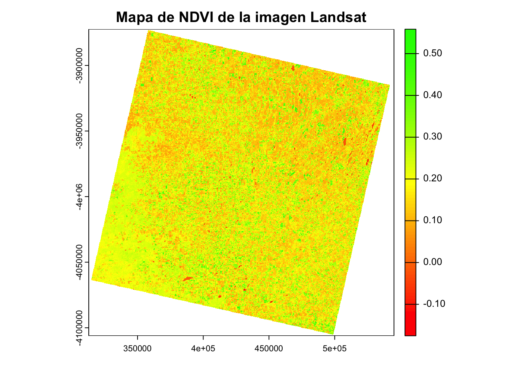

Datos raster
Las imágenes satelitales son en general datos que se presentan en
formato raster. Otros sensores remotos, commo los radares meterologicos,
tambien presentan su informacion en formatos raster.
Actualmente existen muchas plataformas para poder descargar imagenes
satelitales sin costo:
- EarthExplorer:
repositorio de conjuntos de datos de observación de la Tierra de la
NASA.
- DataSpace: servicio
web que da acceso al centro de datos científicos de Copernicus.
De la primera plataforma descargue la imagen satelital que vamos a
usar en esta leccion.
Leyendo imagenes LANDSAT
Descargue una imagen del 30 de Abril del 2024. El nombre del archivo
contiene el tipo de sensor (LC08), la escena (228085), la fecha
(20240423) y la banda (SR_B4). Cada banda se descarga en un archivo .TIF
diferente.
Queremos leer las bandas para calcular el Índice de vegetación de
diferencia normalizada (NDVI).
El (NDVI) es uno de los índices más utilizado para estimar la
cantidad, calidad y desarrollo de la vegetación con base a la medición
de la intensidad de la radiación de ciertas bandas del espectro
electromagnético que la vegetación emite o refleja.
Como utilizamos datos del Landsat 8, entonces la fórmula será:
NDVI = (Banda 5 – Banda 4)/(Banda 5 + Banda 4)
donde la Banda 5 y la Banda 4 representan las ondas rojas (0,64-0,67
micrómetros) y las ondas del infrarrojo cercano o NIR (0,85-0,88
micrómetros), respectivamente.
Usamos la funcion rast del paquete terra para leer las
bandas.
## terra 1.7.78
red_file <- "datos/landsat/LC08_L2SP_228085_20240423_20240430_02_T1_SR_B4.TIF"
nir_file <- "datos/landsat/LC08_L2SP_228085_20240423_20240430_02_T1_SR_B5.TIF"
red <- rast(red_file)
nir <- rast(nir_file)
ndvi <- (nir - red) / (nir + red)
El calculo se realiza como cualquier otra operacion aritmetica en
R.
Ahora que hicimos el calculo vamos a graficar el resultado. Para esto
generamos una paleta de colores con rojo, amarillo y verde, como se
representa generalmente este producto y lo graficamos utilizando la
funcion plot de r base.
Si quieramos graficarlo con ggplot deberiamos transformar el raster a
un objeto sf.
ndvi_colors <- colorRampPalette(c("red", "yellow", "green"))(100)
plot(ndvi, col = ndvi_colors, main = "Mapa de NDVI de la imagen Landsat")

Finalmente guardamos la imagen procesada con el NDVI calculoda, para
utilizarla en R o en otro software sistemas de informacion
geografico.
writeRaster(ndvi, "datos/landsat/ndvi.tif")
LS0tCnRpdGxlOiAiRGF0b3MgcmFzdGVyIgpvdXRwdXQ6IAogIGh0bWxfZG9jdW1lbnQ6CiAgICBjb2RlX2Rvd25sb2FkOiB0cnVlCiAgICBoaWdobGlnaHQ6IHRhbmdvCi0tLQoKYGBge3Igc2V0dXAsIGluY2x1ZGU9RkFMU0V9CmtuaXRyOjpvcHRzX2NodW5rJHNldChlY2hvID0gVFJVRSkKYGBgCgojIyBEYXRvcyByYXN0ZXIKCkxhcyBpbcOhZ2VuZXMgc2F0ZWxpdGFsZXMgc29uIGVuIGdlbmVyYWwgZGF0b3MgcXVlIHNlIHByZXNlbnRhbiBlbiBmb3JtYXRvIHJhc3Rlci4gIE90cm9zIHNlbnNvcmVzIHJlbW90b3MsIGNvbW1vIGxvcyByYWRhcmVzIG1ldGVyb2xvZ2ljb3MsIHRhbWJpZW4gcHJlc2VudGFuIHN1IGluZm9ybWFjaW9uIGVuIGZvcm1hdG9zIHJhc3Rlci4gCgpBY3R1YWxtZW50ZSBleGlzdGVuIG11Y2hhcyBwbGF0YWZvcm1hcyBwYXJhIHBvZGVyIGRlc2NhcmdhciBpbWFnZW5lcyBzYXRlbGl0YWxlcyBzaW4gY29zdG86CgoqIFtFYXJ0aEV4cGxvcmVyXShodHRwczovL2VhcnRoZXhwbG9yZXIudXNncy5nb3YpOiByZXBvc2l0b3JpbyBkZSBjb25qdW50b3MgZGUgZGF0b3MgZGUgb2JzZXJ2YWNpw7NuIGRlIGxhIFRpZXJyYSBkZSBsYSBOQVNBLgoqIFtEYXRhU3BhY2VdKGh0dHBzOi8vZGF0YXNwYWNlLmNvcGVybmljdXMuZXUpOiBzZXJ2aWNpbyB3ZWIgcXVlIGRhIGFjY2VzbyBhbCBjZW50cm8gZGUgZGF0b3MgY2llbnTDrWZpY29zIGRlIENvcGVybmljdXMuIAoKRGUgbGEgcHJpbWVyYSBwbGF0YWZvcm1hIGRlc2Nhcmd1ZSBsYSBpbWFnZW4gc2F0ZWxpdGFsIHF1ZSB2YW1vcyBhIHVzYXIgZW4gZXN0YSBsZWNjaW9uLgoKIyMgTGV5ZW5kbyBpbWFnZW5lcyBMQU5EU0FUCgpEZXNjYXJndWUgdW5hIGltYWdlbiBkZWwgMzAgZGUgQWJyaWwgZGVsIDIwMjQuICBFbCBub21icmUgZGVsIGFyY2hpdm8gY29udGllbmUgZWwgdGlwbyBkZSBzZW5zb3IgKExDMDgpLCBsYSBlc2NlbmEgKDIyODA4NSksIGxhIGZlY2hhICgyMDI0MDQyMykgeSBsYSBiYW5kYSAoU1JfQjQpLiAgQ2FkYSBiYW5kYSBzZSBkZXNjYXJnYSBlbiB1biBhcmNoaXZvIC5USUYgZGlmZXJlbnRlLiAKClF1ZXJlbW9zIGxlZXIgbGFzIGJhbmRhcyBwYXJhIGNhbGN1bGFyIGVsIMONbmRpY2UgZGUgdmVnZXRhY2nDs24gZGUgZGlmZXJlbmNpYSBub3JtYWxpemFkYSAoTkRWSSkuCgpFbCAoTkRWSSkgZXMgdW5vIGRlIGxvcyDDrW5kaWNlcyBtw6FzIHV0aWxpemFkbyBwYXJhIGVzdGltYXIgbGEgY2FudGlkYWQsIGNhbGlkYWQgeSBkZXNhcnJvbGxvIGRlIGxhIHZlZ2V0YWNpw7NuIGNvbiBiYXNlIGEgbGEgbWVkaWNpw7NuIGRlIGxhIGludGVuc2lkYWQgZGUgbGEgcmFkaWFjacOzbiBkZSBjaWVydGFzIGJhbmRhcyBkZWwgZXNwZWN0cm8gZWxlY3Ryb21hZ27DqXRpY28gcXVlIGxhIHZlZ2V0YWNpw7NuIGVtaXRlIG8gcmVmbGVqYS4KCkNvbW8gdXRpbGl6YW1vcyBkYXRvcyBkZWwgTGFuZHNhdCA4LCBlbnRvbmNlcyBsYSBmw7NybXVsYSBzZXLDoTogCgoqKk5EVkkgPSAoQmFuZGEgNSDigJMgQmFuZGEgNCkvKEJhbmRhIDUgKyBCYW5kYSA0KSoqCgpkb25kZSBsYSBCYW5kYSA1IHkgbGEgQmFuZGEgNCByZXByZXNlbnRhbiBsYXMgb25kYXMgcm9qYXMgKDAsNjQtMCw2NyBtaWNyw7NtZXRyb3MpIHkgbGFzIG9uZGFzIGRlbCBpbmZyYXJyb2pvIGNlcmNhbm8gbyBOSVIgKDAsODUtMCw4OCBtaWNyw7NtZXRyb3MpLCByZXNwZWN0aXZhbWVudGUuCgpVc2Ftb3MgbGEgZnVuY2lvbiBgcmFzdGAgZGVsIHBhcXVldGUgdGVycmEgcGFyYSBsZWVyIGxhcyBiYW5kYXMuIAoKYGBge3J9CmxpYnJhcnkodGVycmEpCgpyZWRfZmlsZSA8LSAiZGF0b3MvbGFuZHNhdC9MQzA4X0wyU1BfMjI4MDg1XzIwMjQwNDIzXzIwMjQwNDMwXzAyX1QxX1NSX0I0LlRJRiIKbmlyX2ZpbGUgPC0gImRhdG9zL2xhbmRzYXQvTEMwOF9MMlNQXzIyODA4NV8yMDI0MDQyM18yMDI0MDQzMF8wMl9UMV9TUl9CNS5USUYiCgpyZWQgPC0gcmFzdChyZWRfZmlsZSkKbmlyIDwtIHJhc3QobmlyX2ZpbGUpCgpuZHZpIDwtIChuaXIgLSByZWQpIC8gKG5pciArIHJlZCkKYGBgCgpFbCBjYWxjdWxvIHNlIHJlYWxpemEgY29tbyBjdWFscXVpZXIgb3RyYSBvcGVyYWNpb24gYXJpdG1ldGljYSBlbiBSLgoKQWhvcmEgcXVlIGhpY2ltb3MgZWwgY2FsY3VsbyB2YW1vcyBhIGdyYWZpY2FyIGVsIHJlc3VsdGFkby4gIFBhcmEgZXN0byBnZW5lcmFtb3MgdW5hIHBhbGV0YSBkZSBjb2xvcmVzIGNvbiByb2pvLCBhbWFyaWxsbyB5IHZlcmRlLCBjb21vIHNlIHJlcHJlc2VudGEgZ2VuZXJhbG1lbnRlIGVzdGUgcHJvZHVjdG8geSBsbyBncmFmaWNhbW9zIHV0aWxpemFuZG8gbGEgZnVuY2lvbiBgcGxvdGAgZGUgciBiYXNlLgoKU2kgcXVpZXJhbW9zIGdyYWZpY2FybG8gY29uIGdncGxvdCBkZWJlcmlhbW9zIHRyYW5zZm9ybWFyIGVsIHJhc3RlciBhIHVuIG9iamV0byBzZi4gCgpgYGB7cn0KbmR2aV9jb2xvcnMgPC0gY29sb3JSYW1wUGFsZXR0ZShjKCJyZWQiLCAieWVsbG93IiwgImdyZWVuIikpKDEwMCkKCnBsb3QobmR2aSwgY29sID0gbmR2aV9jb2xvcnMsIG1haW4gPSAiTWFwYSBkZSBORFZJIGRlIGxhIGltYWdlbiBMYW5kc2F0IikKCmBgYAoKRmluYWxtZW50ZSBndWFyZGFtb3MgbGEgaW1hZ2VuIHByb2Nlc2FkYSBjb24gZWwgTkRWSSBjYWxjdWxvZGEsIHBhcmEgdXRpbGl6YXJsYSBlbiBSIG8gZW4gb3RybyBzb2Z0d2FyZSBzaXN0ZW1hcyBkZSBpbmZvcm1hY2lvbiBnZW9ncmFmaWNvLgoKYGBge3IgZXZhbD1GQUxTRX0Kd3JpdGVSYXN0ZXIobmR2aSwgImRhdG9zL2xhbmRzYXQvbmR2aS50aWYiKQoKYGBgCgo=